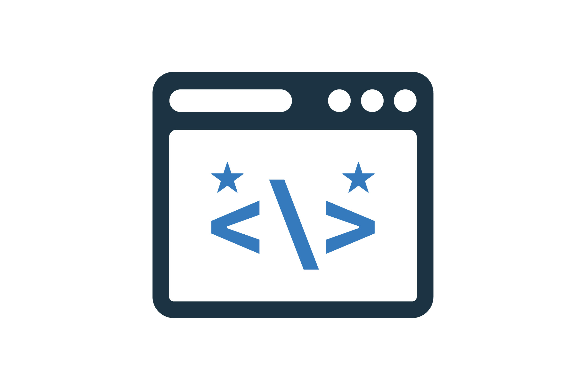

Renan Bispo
Desenvolvedor Back-end
Desenvolvedor Back-end
Sou desenvolvedor back-end com experiência em Go, Java e PostgreSQL, atuando na construção de APIs escaláveis, seguras e de fácil manutenção. Tenho foco em desenvolver soluções performáticas, estruturando consultas otimizadas e arquiteturas flexíveis que contribuem para aplicações mais eficientes e sustentáveis.
Também possuo conhecimentos em Docker, versionamento de código com Git e desenvolvimento em ADVPL, o que amplia minha capacidade de atuar tanto em sistemas legados quanto em projetos modernos. Busco constantemente evoluir tecnicamente, aplicando boas práticas de desenvolvimento, organização de código e melhoria contínua em cada projeto.
Primeiro contato com desenvolvimento de software, estudando lógica, fundamentos da web e boas práticas de código. Foco em entender como sistemas se comunicam e em construir uma base sólida para evoluir na área.
Atuo como estagiário de suporte e desenvolvimento na empresa Grupo Vitalmed, onde realizo suporte técnico aos usuários e desenvolvo soluções para problemas de software. Também realizo manutenção de sistemas legados e desenvolvo novas funcionalidades para os sistemas.
